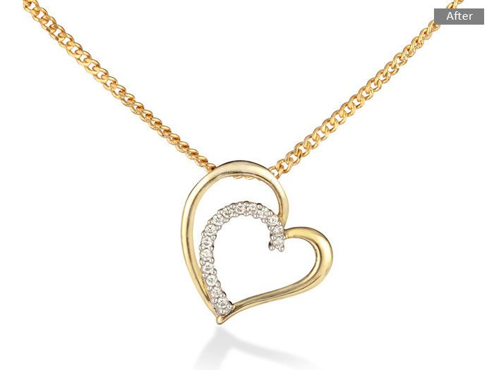
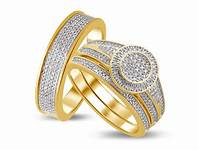
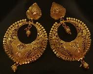
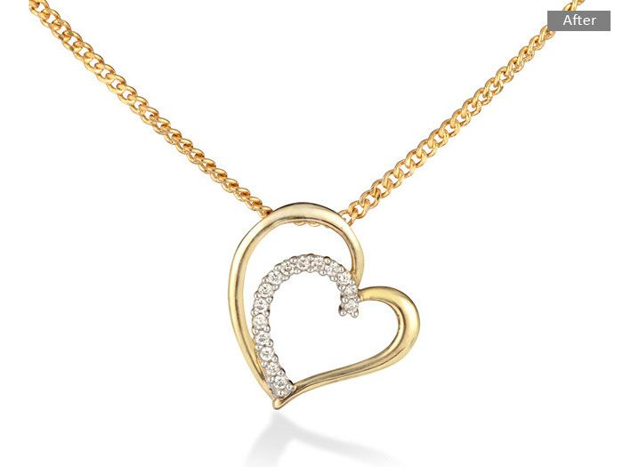
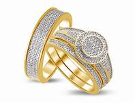
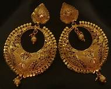

FNC Jewellers is an old, trusted and reputed jewellery house. The collection is eye-catching, especially the rings with jade and emerald stones are beautifully crafted � the precious stone have exlusive touch and feel. As the stone can be replaced with any stone (even black only) or colour of your choice, it is difficult to resist.
Kundan And Polki Sets is our speciality.
A limited but exclusive range of bracelets. Jewellery including rings and bracelets goes well with both traditional and western clothes, so people don�t mind spending more on such items. The kadas or thick gold bangles sport beautiful minakari (enamel) work. The necklace sets in kundan and polki lend a traditional look. What is unique are the �strings� on sale � made of pearls and precious stones, the range is reasonably price.
FNC Jewellers is one of the best shopping app for buying traditional & heritage jewellery.
 




